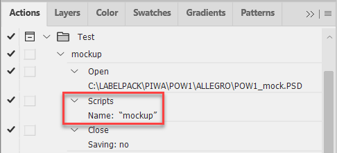
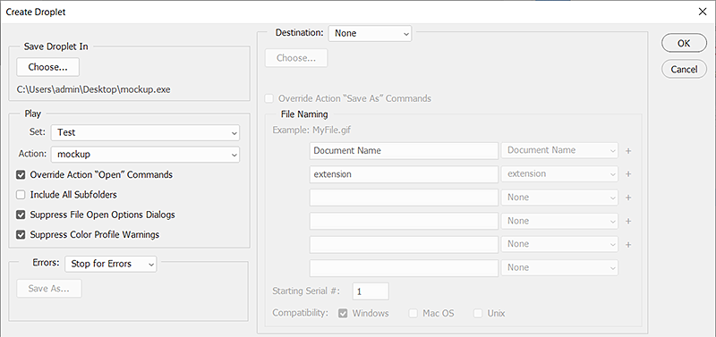

How to make a droplet to run a script in Photoshop
The official way of running a script in Photoshop is via the File > Scripts menu, isn't it? Also, if you're a script developer, you can trigger it from ESTK or VS Code. Yet another — unofficial way — is to run it via a droplet. I whish I knew this trick years ago when I worked (at my previous work) mostly in Photoshop, doing retouching and color correction!
Install the script — for example, mockup.jsx — in the C:\Program Files\Adobe\Adobe Photoshop 202X\Presets\Scripts folder and restart Photoshop to make it appear in the menu.
You need to install the script in Photoshop's Presets/Scripts directory, so that only the script name is used in the action/droplet.
Don't browse to the script which will record the full absolute path. This way the droplet uses the relative path to the script which is located in the same folder so the same pair — droplet & script — should work on different computers and Photoshop versions and with all assets (no need to create a droplet specifically for each user/computer).
Record an action making three steps:
- Open an image file
- Run the script from File > Scripts > mockup.jsx
- Close the file without saving

Create a droplet from this action.

Move it to the \Presets\Scripts folder next to mockup.jsx.
The droplet is created from an action that opens the dropped file, triggers the script and closes the file without saving.
Thus I can edit the script without remaking the droplet. Also, the script works as it is: against the active document.
Finally, make an alias for the droplet — for instance, on the desktop — on which you can drop files for processing.
Here is how it works.